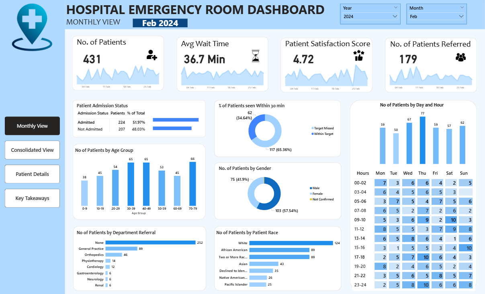
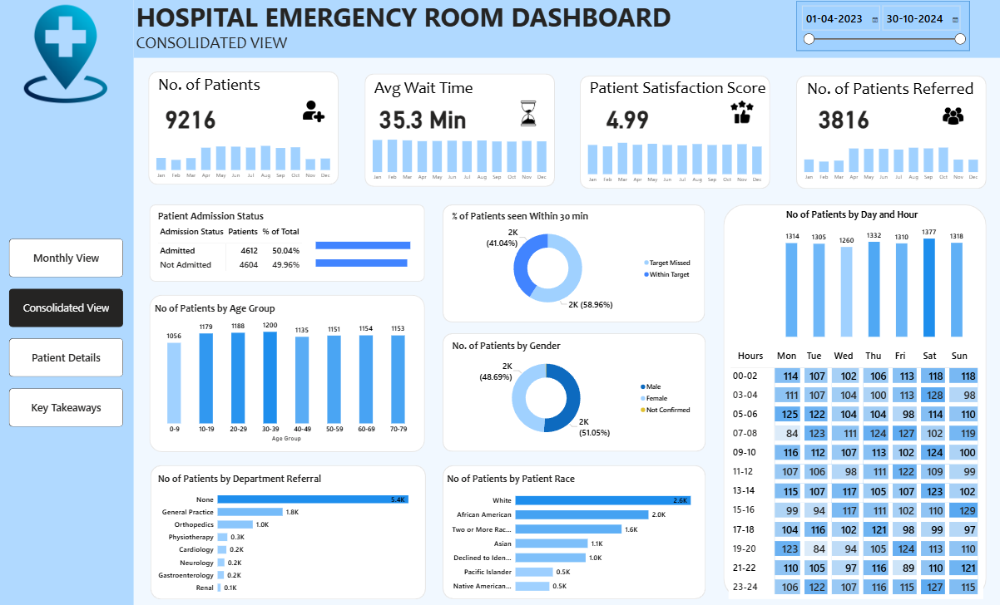
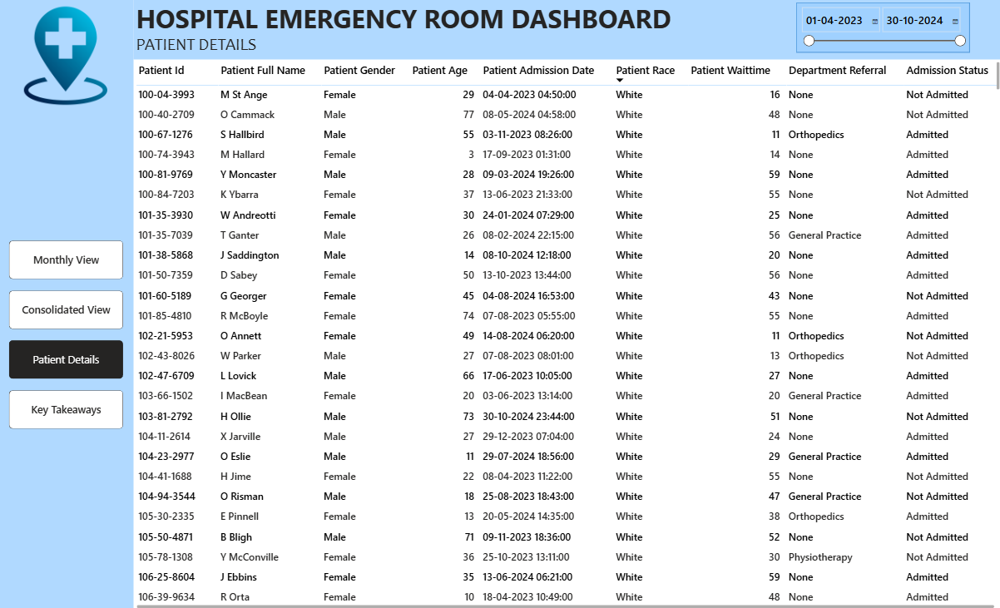
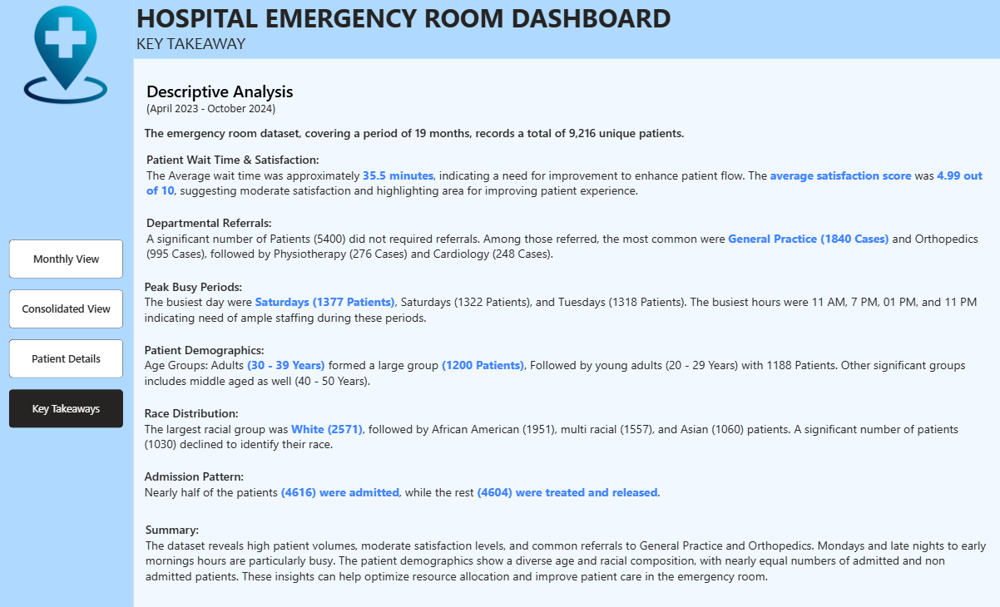

An interactive healthcare dashboard developed using Power BI to monitor emergency room performance, patient flow, waiting time, referrals, admissions, demographics, and operational KPIs.
← Back to PortfolioThe Hospital Emergency Room Dashboard provides hospital administrators with a comprehensive view of emergency department operations. It enables healthcare professionals to monitor patient flow, improve operational efficiency, reduce waiting times, and support better patient care through interactive visualisations and KPI tracking.
Hospitals receive a large number of emergency patients every day. Without a centralized reporting system, analysing patient waiting times, admission status, referrals, and operational performance becomes difficult. This dashboard was developed to provide real-time insights into emergency room performance and support informed decision-making.
Data Cleaning, Power Query, DAX, Data Modelling & Dashboard Development




Monitor the total number of emergency room visits.
Track patient waiting time before receiving treatment.
Measure the overall patient satisfaction score.
Analyse admitted versus non-admitted patients.
Identify referrals across different hospital departments.
Evaluate emergency room response efficiency.
Analyse age group, gender and race distribution.
Identify the busiest periods in the emergency department.
This dashboard enables hospital administrators to monitor emergency room performance through interactive visualisations and KPIs. It helps improve operational efficiency, patient experience, and resource planning by transforming healthcare data into actionable insights.